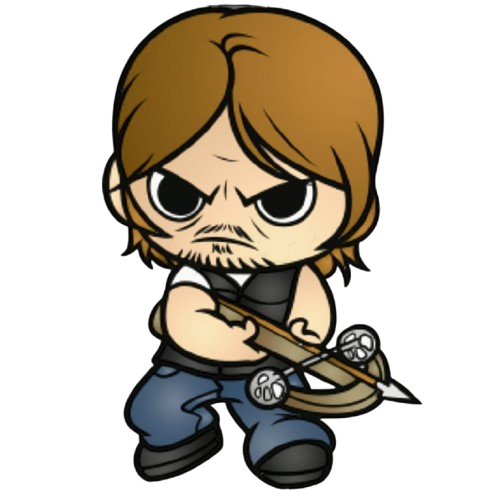
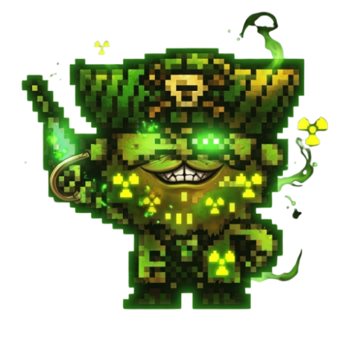
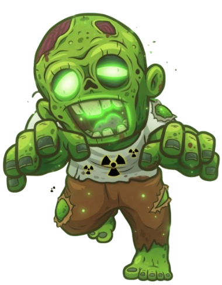
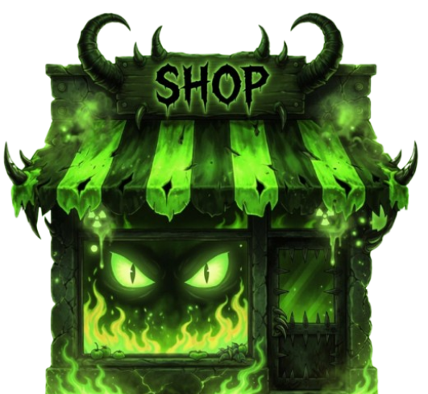
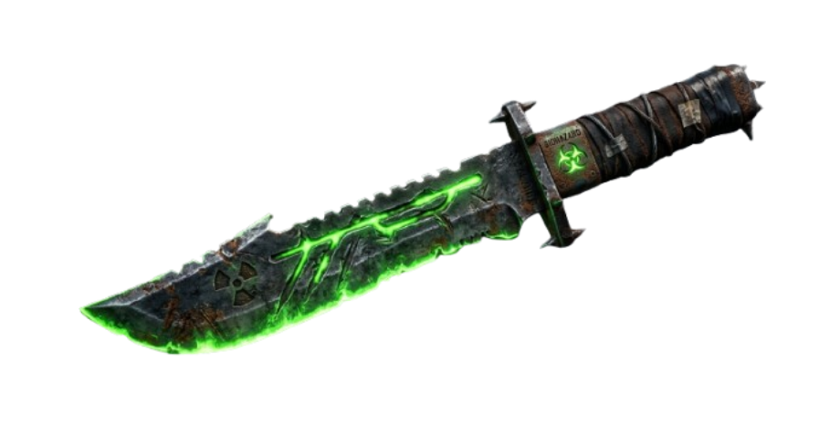
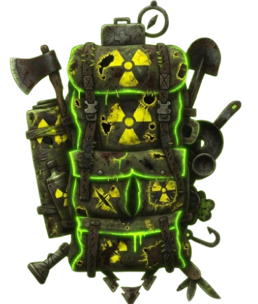
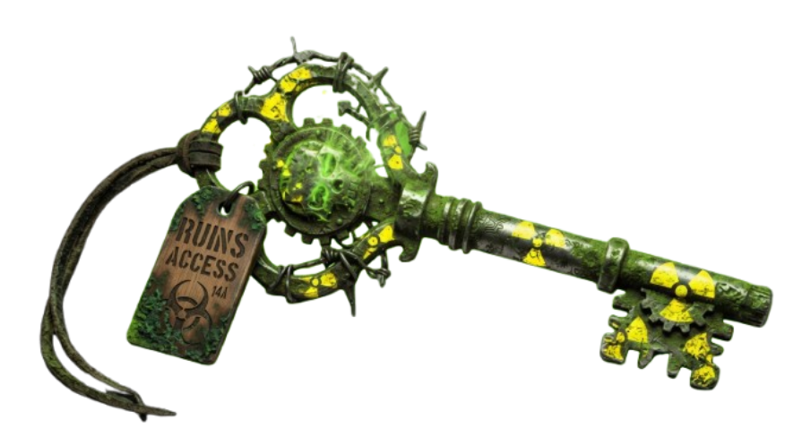
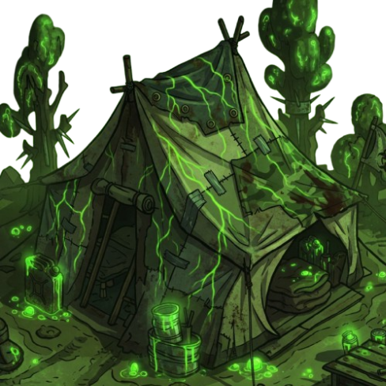
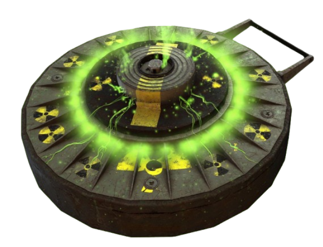

Has despertado en la Zona Cero. El mundo que conocías ha desaparecido bajo las aguas y la radiación. Tu única esperanza de ver el amanecer es llegar al búnker blindado, pero la puerta está sellada y el hambre te pisa los talones.
Encuentra la Llave Maestra oculta en el mapa.
Consigue el Machete para eliminar zombies.
Cruza el umbral del Búnker y sobrevive.
"Navegas por un mundo destruido lleno de Zombies.
mundo ha terminado, pero tu viaje no."

Eres el último rastro de humanidad en esta zona.
Tu cuerpo está al límite: cada paso que das consume 1 ración de comida.
Si tu contador de raciones llega a cero, el hambre te vencerá.
Mantén tus 3 corazones a salvo, porque en este mundo no hay segundas oportunidades si tu salud se agota.

Bandidos oportunistas que patrullan las ruinas.
Al encontrarte con ellos, se iniciará un combate automático donde se pondrá a prueba tu fuerza (basada en tu comida y suministros).
Si ganas, les arrebatarás sus recursos;
si pierdes, serás tú quien termine herido y con la mochila saqueada.

Cadáveres reanimados que vagan sin descanso.
Si uno de ellos te alcanza y vas desarmado, te morderá provocándote la pérdida de una vida y te obligará a retroceder al punto de inicio.
Sin embargo, si llevas el Machete, podrás ejecutarlos para ganar experiencia y limpiar el camino.

Un puesto de avanzada donde los suministros son la única ley.
Aquí puedes intercambiar el botín que encuentres por equipo vital.
Podrás adquirir el Machete "Rebana-Zombies 3000" por 5 suministros o comprar paquetes de Raciones Militares (MRE) por 3 suministros para no morir de inanición.

La joya de la corona del Mercado Negro. Este machete reforzado cambia las reglas del juego: es la única forma de eliminar a los zombies. Sin ella, tocar un muerto viviente te costará una vida; con ella, los despacharás de un golpe, limpiarás el mapa y ganarás puntos de experiencia. Es una inversión de 5 suministros que separa a las víctimas de los supervivientes.

Mochilas militares y cajas de equipo dejadas atrás durante el colapso.
Recoger estos paquetes te otorga +5 suministros de forma inmediata.
Son esenciales para poder comerciar en el Mercado Negro, así que desvíate de tu ruta si ves una; la codicia a veces es necesaria para sobrevivir.

Un objeto único perdido en algún rincón del mapa.
Sin esta llave, la pesada puerta blindada del refugio no se abrirá.
Es tu prioridad absoluta: búscala entre las aguas contaminadas y, una vez que la tengas en tu inventario, no te detengas ante nada hasta llegar a la salvación.

El último lugar seguro sobre la faz de la tierra.
Representa tu victoria y el fin de la pesadilla.
Para entrar y sellar la escotilla, es obligatorio poseer la Llave Maestra.
Si llegas sin ella, solo encontrarás una puerta cerrada y a los muertos pisándote los talones.

Viejas minas terrestres ocultas bajo los escombros.
Son invisibles hasta que es demasiado tarde.
Pisar una de ellas causará una explosión que te restará un corazón de vida instantáneamente.
Tras detonar, la zona quedará despejada, pero el daño en tu cuerpo será permanente.